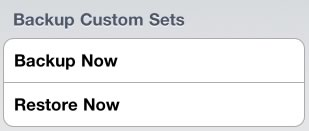

Japanese Flash allows you to backup and restore your custom study sets across multiple devices. Users looking to use Japanese flash on an iPhone and iPad, for example, can backup sets from their iPhone, then log into the backup system on an iPad and restore the study sets from the iPhone. The system transfers custom study sets only, and does not transfer any progress information.
To backup your custom study sets, scroll to the bottom of the "Study Sets" tab. And tap "Backup Custom Sets".

You will be presented with a login screen from which you can login using one of your accounts from several popular web sites. Choose your preferred login provider and log in. You sets will be packaged and sent to the Long Weekend server. That's it, your sets are backuped up!
Note: Make sure you are connected to wifi or cellular internet to backup or restore custom sets.Restoring custom sets to another device is just as easy as backing then up. Again scroll to the bottom of the "Study Sets" tab. Tap "Restore Custom Sets". You will again be see the login screen. Choose the same service you logged into when you made you backup and log in. Once your login is complete the study sets will be downloaded and installed.
What happens when you restore study sets? Any study sets and words in a study set missing on the device are added. Words that were removed on the other device are not removed on the new device. This was done to prevent accidental loss if you restored an old backup and/or frequently make changes to sets.